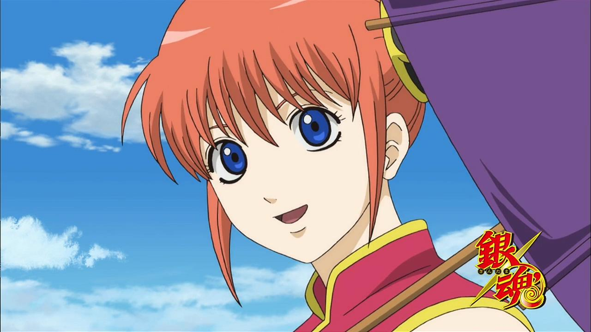

神乐-神楽（かぐら）
《银魂》[1] 的女主角,是宇宙最强的战斗种族“夜兔族”的一员.

宇宙最强的怪物猎人“星海坊主”神晃与夜兔母星龙脉的化身江华的女儿，春雨第七师团师团长神威的妹妹。曾经做过流氓组织的打手。后来因为厌倦打斗脱离组织后赖在了无业武士坂田银时所开接受各种委托的万事屋中，现在为万事屋成员之一。
主线经历
-
失业武士坂田银时在歌舞伎町经营的“万事屋”的主要成员之一。
初次出场在第三话。来到江户的神乐因为每顿
可以吃鲑鱼茶泡饭的诱惑而被黑社会团伙作为打手雇佣，
因为厌恶了打斗逃出组织的过程中与当时已经组成万事屋的银时和新八相遇，
然后神乐声称是为了存够回故乡的钱而自作主张的留在了银时的万事屋打工.
-
神乐把万事屋当成了自己的家，想要一辈子在万事屋，即使并没有工资拿。银时因车祸失忆离家出走，万事屋濒临解散时神乐也守在万事屋，表示要与万事屋共存亡[15] 。
在神乐与新八等人的帮助下，银时找回了记忆并重回万事屋。
-
为了提防将军上京时有人刺杀将军，神乐作为陆路影武者队伍的一员参与其中>
并在伊贺再次遇到神威，兄妹间重新展开了对决[11] ，后来被天道众打断[37] 。
最终德川茂茂被下毒杀害[38] ，近藤勋被捕，真选组被勒令解散[39] 。得知近藤要于近日处刑以后[40] ，和银时、土方、伊丽莎白等奔赴黑绳岛协助近藤和桂越狱[41] 。
其间神乐阻止了打的难舍难分的冲田总悟与今井信女继续厮杀[42] 以对付双方共同的敌人。
-
因为神威在返回途中遭到神晃攻击而下落不明，
神乐决定和寻找高杉的鬼兵队同行去寻找神威并阻止父亲和哥哥[44] 。
与鬼兵队一起抵达了自己的故乡——洛阳星[45] 。并阻止了兄长与父亲对战[46]
神乐最喜欢的零食，但是还没达到像银时的甜食和土方的蛋黄酱一样不可或缺。
因为爱吃醋昆布被歌舞伎町的其他小孩嫌弃过[5] 。了解更多神乐可以参考这里:
百科